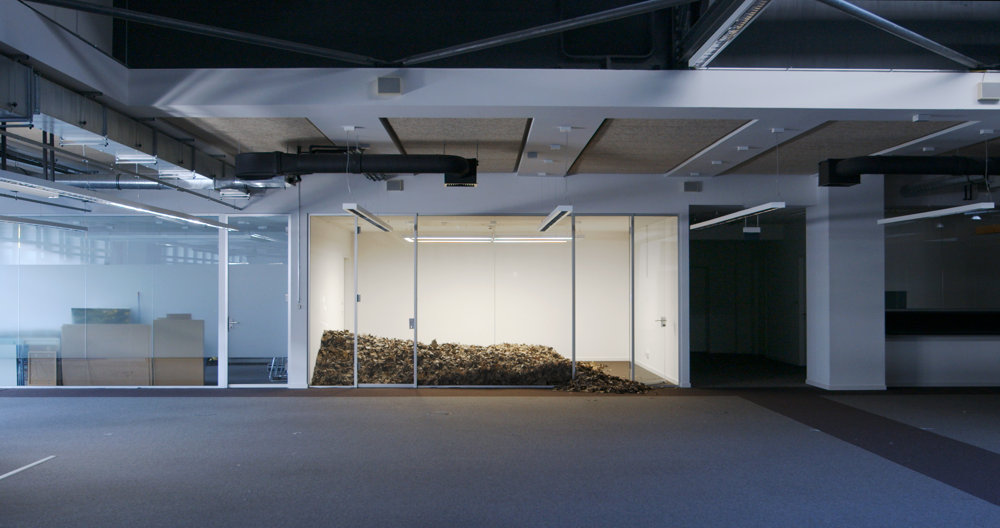
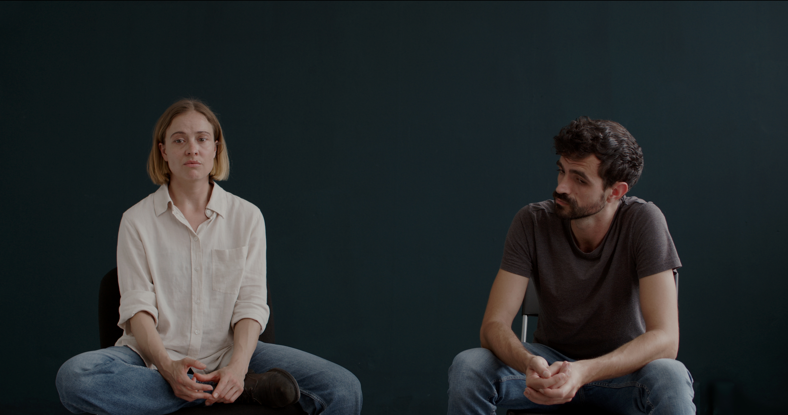

We Killed Seasons
Video 4K
Sound stereo
26:40 min.
We Killed Seasons (2026) is a video installation that imagines a world without seasons. We follow five people who inhabit a place that is familiar yet fundamentally altered. Two of them speak to one another in loose conversation about the changing meaning of the sun, while another voice attempts to make sense of a world in which rhythm and time have come undone. The work reflects on the disappearance of natural cycles and what it means to lose the temporal structures in a place that is becoming increasingly inhospitable.
Cast: J.R. Blank, Tintin Cooper, Anna-Carolina Stuckart, Nouri Chamari
Dance: Justine Del Corte
Voice: Jessica Edwards
Script Consultant: Gemma Kerr
Set Construction: Oliver Walker
Sound Recording, Music: Zach Hart
Light: Andres Villareal
3D Artist: Nestaeric
Special Thanks: Christine Cheung, Kathrin Grzeschniok, Laura Leppert, Bertolt Meyer, Daniel Theiler